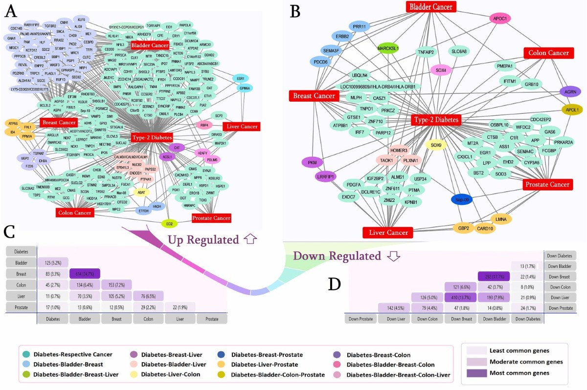
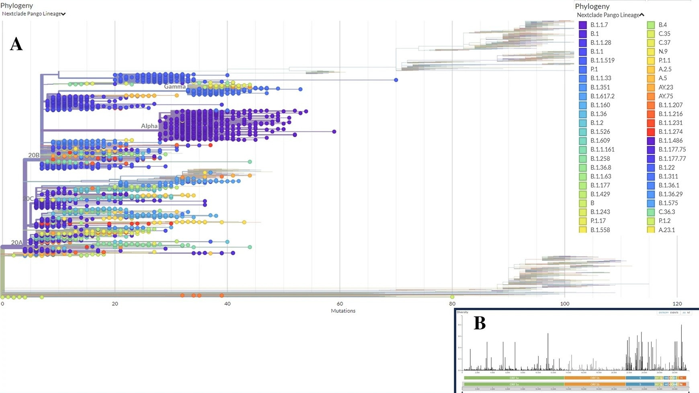
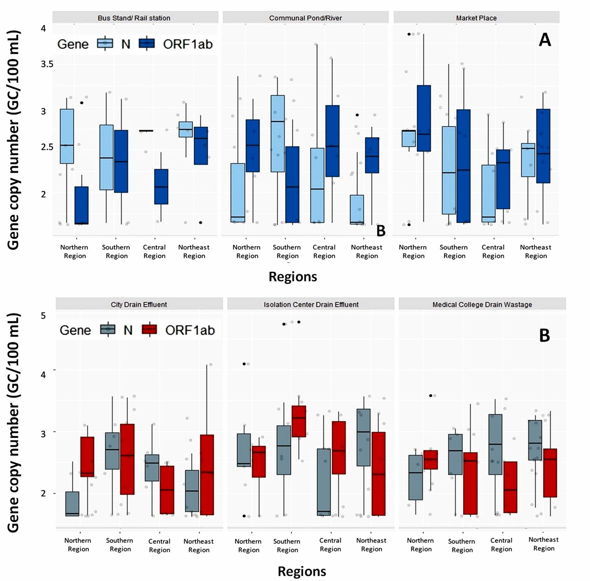
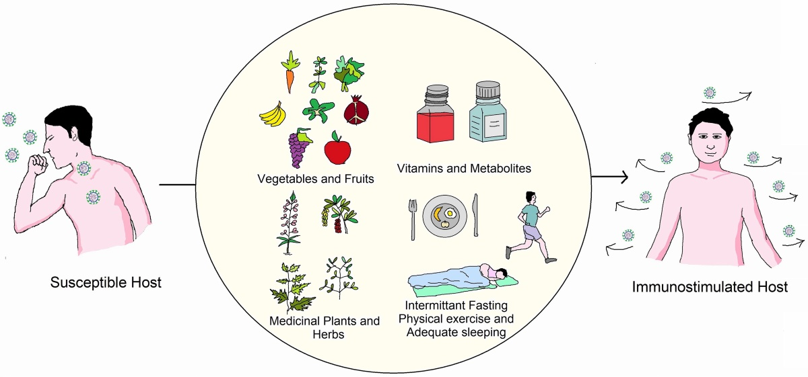

The Research Log
Insights, analyses, and reflections from the intersection of molecular biology and computational science.

Probing the Network Between Cancer and Type-2 Diabetes
An advanced computational paradigm to screen for potential biomarkers linking concurrent carcinomas and T2DM, identifying key proteins and microRNAs that could pave the way for personalized medicine...
Read Full Article »
Variant-Specific Mutations in SARS-CoV-2
An analysis of over 10,000 viral genomes reveals unique mutations in variants like Omicron and Delta...
Read More »

Shared SARS-CoV-2 Mutations in Deceased Patients
Analysis of 5,724 genomes from deceased patients reveals common deleterious mutations across continents...
Read More »

Wastewater Surveillance in Onsite Sanitation Facilities
A new epidemiological model for monitoring SARS-CoV-2 prevalence in developing countries...
Read More »

Rejuvenating the Immune System: A Natural Defense
A review of the measures, from diet to lifestyle, that can naturally rejuvenate and protect against viral infections...
Read More »